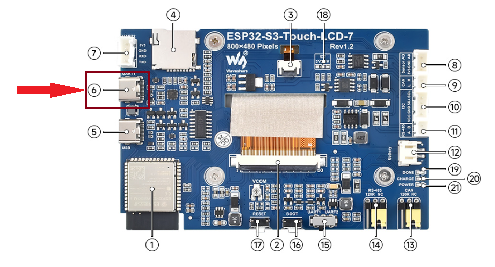

Flash Firmware 固件刷写 (Daniel)
Select Firmware 选择固件:
Daniel
Your browser does not support Web Serial. Try Chrome or Edge.
Step 0: Use a PC or Mac to open this webpage.
Step 1: Connect to UART1 USB Port
Step 2: Click Connect above
Step 3: Enjoy!
